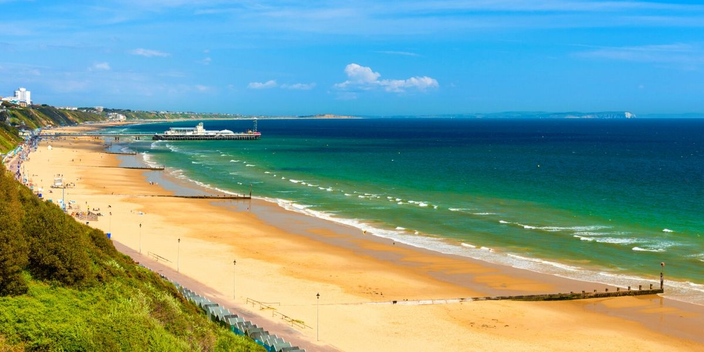
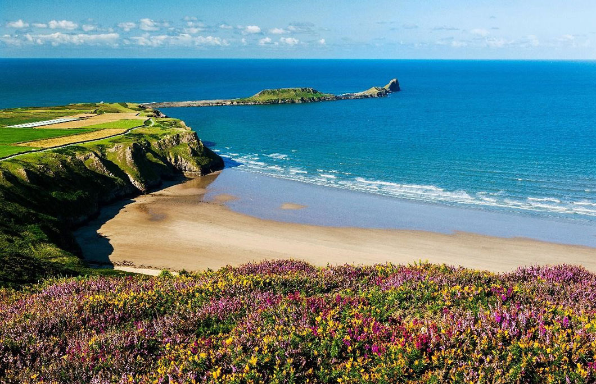
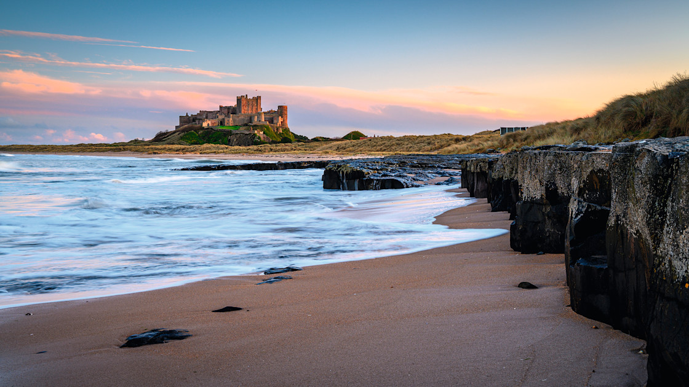
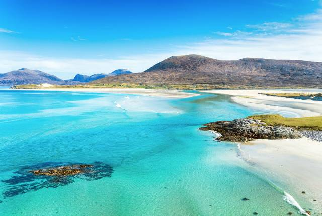
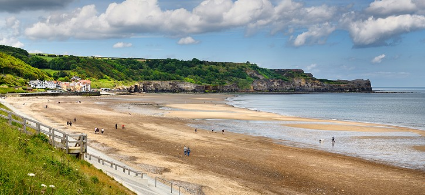

This project aims to clean and restore the
sea beds near the coastal areas of
Porthcurno Beach, addressing the growing
problem of marine pollution. Volunteers and
environmental experts will work together to
remove debris, plastics, and other harmful
waste from the seabed, helping to protect
marine life and improve water quality. By
focusing on areas close to popular beaches,
the initiative not only promotes ocean
conservation but also enhances the natural
beauty of the shoreline, ensuring a safer,
cleaner environment for both marine
creatures and visitors. The long-term goal
is to raise awareness about the importance
of protecting our seas and inspire others to
take action in preserving our planet's
oceans.
Bournemouth Beach, Dorset
Dorset Marine Cleanup Initiative

Project Duration: 3 weeks
Project Requirements: 1 year of
diving
This project focuses on cleaning the sea
beds around Bournemouth Beach, tackling the
increasing issue of pollution beneath the
waves. By organizing regular clean-up
efforts, volunteers will remove harmful
waste, such as plastics, discarded fishing
nets, and other debris that threatens marine
ecosystems. In addition to benefiting
wildlife, the project enhances the quality
of water and promotes a healthier
environment for both sea creatures and
beachgoers. Through these efforts, we aim to
inspire the community to engage in ongoing
conservation and environmental stewardship.
Rhossili Bay, Wales
Wales Coastal Seabed Recovery

Project Duration: 2 weeks
Project Requirements: 1 year of
diving
The sea bed cleanup project near Rhossili
Bay is dedicated to removing harmful waste
from the ocean floor to protect marine
ecosystems. Volunteers and experts will
focus on collecting debris like plastics and
fishing gear that disrupt aquatic habitats.
The project seeks to improve the health of
the ocean and maintain the natural beauty of
the surrounding beaches. By raising
awareness about ocean pollution, we hope to
inspire individuals to take an active role
in keeping our coastlines and seas clean for
generations to come.
Bamburgh Beach, Northumberland
Northumberland Ocean Cleanup

Project Duration: 1 week
Project Requirements: 1 year of
diving
The goal of this initiative is to remove
marine debris from the sea beds around
Bamburgh Beach, ensuring a cleaner and safer
environment for marine life. Volunteers will
work with local experts to target pollution
hotspots, clearing the ocean floor of
harmful waste such as plastic, metal, and
other debris. This effort not only reduces
the negative impact on marine ecosystems but
also encourages sustainable practices and
the preservation of the beautiful coastline.
Our vision is to foster greater
environmental awareness and inspire others
to join the movement for cleaner oceans.
Show more
Luskentyre Beach, Scotland (Isle of Harris)
Scottish Waters Preservation Project

Project Duration: 2 weeks
Project Requirements: 1 year of
diving
This project is dedicated to preserving the
health of marine ecosystems near Luskentyre
Beach by removing waste from the sea bed.
With the help of community volunteers, we
will clear pollutants such as plastic,
fishing debris, and other harmful materials
that affect underwater habitats. By
restoring the ocean floor, we aim to protect
aquatic life, improve water quality, and
enhance the beach experience for locals and
tourists alike. The initiative also serves
as a reminder of the importance of keeping
our oceans clean and taking action to
prevent future pollution.
Whitby Beach, Yorkshire
Yorkshire Seabed Conservation Effort

Project Duration: 1 week
Project Requirements: 1 year of
diving
Our sea bed cleanup project near Whitby
Beach aims to remove harmful waste and
pollution from the ocean floor, safeguarding
marine life and improving the overall health
of the ecosystem. Volunteers will work
alongside environmental professionals to
target debris, including plastics, metal,
and other materials that pose a threat to
marine environments. The project not only
improves the local water quality but also
raises awareness about the importance of
environmental conservation. By taking action
to clean up the seas, we hope to inspire
more people to protect our oceans and
preserve the beauty of coastal areas.
9.7/10
278 Reviews
Recent reviews
10/10
Helped out for two of the three weeks at
Trewyarnon Bay, had a fun time helping out at
cleanup the area around. Lovely experience would
definitely recommend to help out Seagate.
8/10
Helped out for a couple of weeks at Lunan Bay,
had a great time assisting with the cleanup
around the area. Such a beautiful spot, and the
experience was really rewarding. Would
definitely recommend helping out with Seagate!
10/10
Volunteered for a couple of weeks at Southwold
Beach, helping with the cleanup. It was a great
experience in a beautiful setting. Definitely
recommend getting involved with Seagate!
Got suggestions. Leave them here we would love to hear them.